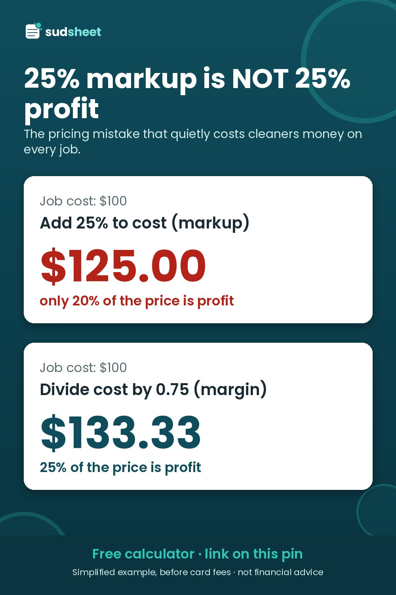

Margin vs Markup for House Cleaners: Why Adding 25% Isn't 25% Profit

Lots of cleaners price like this: work out what the job costs, then "add 25% for profit." It feels right. It isn't what most people think it is.
The two definitions
- Markup = profit ÷ cost
- Margin = profit ÷ price
Both use the same profit. They divide it by different things, so the same dollar profit gives you two different percentages.
The $100 example
A clean costs you $100 (labour, travel, supplies and overhead).
Add 25% markup: $100 × 1.25 = $125. Your profit is $25. As a share of the price, $25 ÷ $125 = 20%. You wanted 25% and got 20%.
Price for a 25% margin: $100 ÷ (1 − 0.25) = $100 ÷ 0.75 = $133.33. Your profit is $33.33, and $33.33 ÷ $133.33 = 25% of the price.
That's an $8.33 difference on a $100 job. On bigger jobs and over a year of recurring clients, it adds up.
Why margin is the number to target
Your price is what the client pays. Card fees, taxes and any discounts all come off the price, not your cost. Thinking "what share of every dollar the client pays do I keep?" matches how the money really moves. Margin answers that question directly.
The formula to use
Price = Cost ÷ (1 − target margin − card fee %)
With a 25% target margin and a 3% card fee: Price = Cost ÷ 0.72.
In a fictional first-clean example from our walkthrough guide, a cost of $223.23 ÷ 0.72 = $310.05, rounded up to $315. A 25% markup would have quoted about $279, which is $31 less on one job.
Quick conversion table
| Target margin | Equivalent markup | Divide cost by |
|---|---|---|
| 15% | 17.6% | 0.85 |
| 20% | 25.0% | 0.80 |
| 25% | 33.3% | 0.75 |
| 30% | 42.9% | 0.70 |
| 35% | 53.8% | 0.65 |
| 40% | 66.7% | 0.60 |
(Before card fees. Markup = margin ÷ (1 − margin).)
So if you've been "adding 25%," your real margin has been 20%. To actually keep 25%, you need a 33.3% markup.
Where it really bites: recurring discounts
Discounts come off the price, so they come straight out of your margin.
In a fictional every-2-weeks example, a visit costs $150.81. At a 25% margin (after a 3% card fee) the price is $209.46. Take 10% off for a recurring client and round up, and you charge $190.
Now the profit: $190 − $5.70 (card fee) − $150.81 = $33.49. That's a 17.6% margin. A 10% discount didn't take 10 points off your margin. It took about 7.4, which is roughly 30% of your profit on every visit.
That might be a good trade. Recurring clients mean less marketing, less driving between new homes and predictable income. Just make it on purpose. Options:
- Keep the discount and accept the lower margin knowingly.
- Offer a smaller discount (5% instead of 10%).
- Build the discount in by setting a higher "standard" rate.
- Set the recurring price by hand and check the margin it gives.
A 30-second check before you send any quote
- What's my total cost for this job?
- Divide it by (1 − margin − fees). Is my price at or above that?
- If there's a discount, what margin is left after it?
- Is the price above my minimum job price?
Let a spreadsheet do it
The free Sudsheet Quick Quote shows both margin and markup on every quote, so you can see the difference on your own numbers. Excel and Google Sheets, no macros:
The full version adds first-visit vs recurring pricing and a warning when a discount pushes you below your target margin.
Disclosure: Sudsheet makes this calculator. All numbers are fictional examples. Not financial or tax advice.
Free house cleaning quote calculator
Type in the home details and get time on site, your job cost and a price at your target margin, plus a one-line quote to paste into your reply. Excel + Google Sheets, no macros.